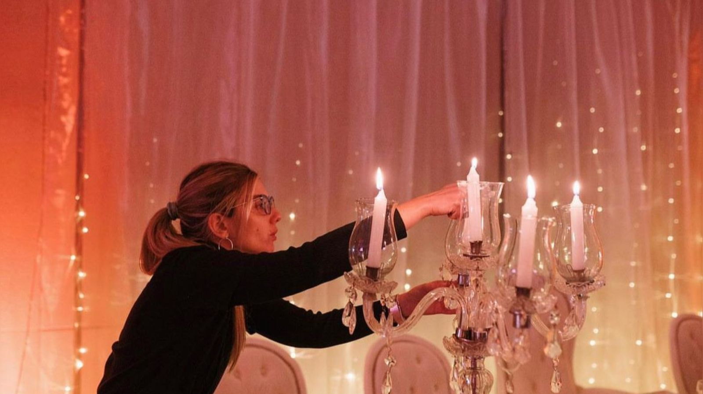

Soy Flor, ambientadoras de profesión y amante de las celebraciones. Me encanta ser parte, junto con mi staff, de momentos únicos y especiales en la vida de quienes nos eligen. Después de más de 10 años de trabajar ambientando y organizando eventos, seguimos disfrutando de cada uno de ellos como si fuera el primero. No existen dos eventos iguales y nos encanta que así sea. Entrar a un espacio, ver cómo se transforma y logra sorprender a trabajadores, anfitriones e invitados por igual, sigue siendo la parte favorita de nuestro trabajo. Para armar un evento se necesita de un equipo y luego de tantos años en el rubro, logramos rodearnos de un grupo de increíbles profesionales y aún mejores personas. La calidez, buena predisposición y organización son el punto de partida de cada proyecto en el que nos involucramos. Entendemos que quienes celebran, llegan a nosotros llenos de expectativas, nervios y aceptamos ese desafío con mucha responsabilidad y seriedad, sin dejar de disfrutar cada momento. ¿Celebramos juntos?